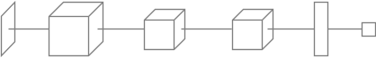
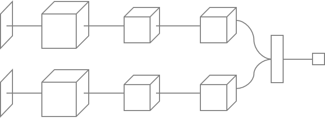
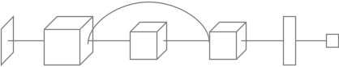
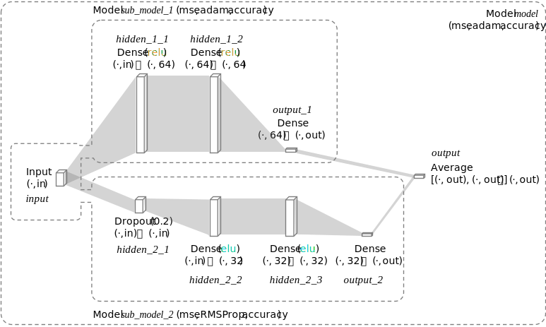
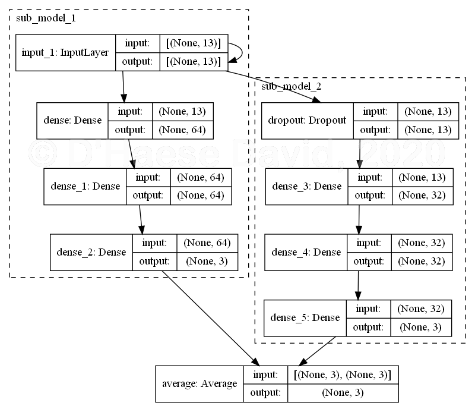
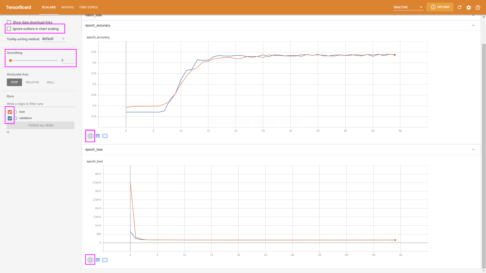

Dit is een 2-dimensionale Revealjs presentatie. Je kan navigeren met de knoppen onderaan rechts of met de toetsen ←, ↑, ↓, →, HOME en END. Gebruik de knop onderaan links voor de inhoudstafel en gebruik de ESC-toets om een grafisch overzicht van de presentatie te verkrijgen.
Met de Sequential API van Keras kunnen we lijnvormig NN maken.

↓
(Ga nu naar onder, let op de kleur van de navigatieknoppen rechts onder)
Met de Functional API kunnen we vertakte en complexere NN maken.


Zonder het te weten, zagen we eerder een voorbeeld van een vertakt NN in de theorie, tijdens het bespreken van de autoencoder. Andere voorbeelden van zulke vertakte NN zijn zogenaamde siamese en residuele NN. Laten we nu proberen zelf een vertakt NN te maken.
Het doel van dit labo is om te proberen te achterhalen in hoeverre examen-resultaten voorspeld kunnen worden a.d.h.v. geslacht, etniciteit, het opleidingsniveau van de ouders en of de student gratis mag lunchen. We gaan dit doel door een zogenaamd ensemble model op te stellen. Dit is een model dat twee of meer andere modellen traint en de resultaten ervan uitmiddelt.
De werkwijze voor dit labo is gelijkaardig aan wat je mag verwachten tijdens het examen:
We beginnen met het identificeren van ons Operating system (OS). Natuurlijk is dat enkel nuttig voor de lector om hiermee rekening te houden tijdens de evaluatie.
↓
import platform, socket, re, uuid, psutil
sysinfo = f"""
Platform: {platform.system()}
Platform-release: {platform.release()}
Platform-version: {platform.version()}
Architecture: {platform.machine()}
Hostname: {socket.gethostname()}
Ip-address: {socket.gethostbyname(socket.gethostname())}
Mac-address: {":".join(re.findall("..", "%012x" % uuid.getnode()))}
Processor: {platform.processor()}
Ram: {str(round(psutil.virtual_memory().total / (1024.0 **3)))+" GB"}"""
print(sysinfo)Er zal je in het antwoordformulier ook gevraagd worden om een lijst te bezorgen van de geïnstalleerde Python modules:
pip listWe beginnen uiteraard met het importeren van de nodige Python modules, hopelijk hier niets nieuw onder de zon:
import numpy as np
from sklearn.model_selection import train_test_split
from tensorflow import keras
from keras.layers import Dense, Dropout, average
from keras.utils import plot_model
from keras.models import load_model
from random import sample, seed
seed(41)Het kan zijn dat je onderweg nog wat modules moet importeren…
De data zullen dit maal afkomstig zijn van Kaggle. Het gaat om resultaten van drie toetsen (wiskunde, lezen en schrijven) bij 7000 studenten ↓.
## Gender Group_A Group_B Group_C Group_D Group_E Parent_Level_Associate
## 1: 1 0 1 0 0 0 1
## 2: 0 0 1 0 0 0 0
## 3: 1 0 0 0 1 0 1
## 4: 0 0 1 0 0 0 0
## 5: 1 0 0 0 0 1 0
## 6: 0 0 1 0 0 0 0
## 7: 1 0 0 0 1 0 0
## 8: 0 0 1 0 0 0 0
## 9: 1 0 0 1 0 0 0
## 10: 1 0 1 0 0 0 0
## 11: 1 0 1 0 0 0 0
## 12: 0 0 0 1 0 0 0
## 13: 0 0 1 0 0 0 0
## 14: 1 0 0 0 0 1 0
## 15: 0 0 0 1 0 0 1
## 16: 0 1 0 0 0 0 0
## 17: 0 1 0 0 0 0 0
## 18: 1 0 1 0 0 0 0
## 19: 1 0 0 1 0 0 0
## 20: 1 0 0 1 0 0 0
## Parent_Level_Bachelor Parent_Level_College Parent_Level_High_School
## 1: 0 0 0
## 2: 0 0 1
## 3: 0 0 0
## 4: 0 0 1
## 5: 0 1 0
## 6: 0 0 0
## 7: 0 1 0
## 8: 0 1 0
## 9: 1 0 0
## 10: 0 0 1
## 11: 0 0 1
## 12: 0 0 1
## 13: 0 0 1
## 14: 0 0 1
## 15: 0 0 0
## 16: 0 0 1
## 17: 0 1 0
## 18: 0 1 0
## 19: 0 1 0
## 20: 0 1 0
## Parent_Level_Master Lunch_Free Prep_Completed Math Reading Writing
## 1: 0 0 0 68 78 74
## 2: 0 0 0 33 32 30
## 3: 0 1 0 70 95 91
## 4: 0 0 0 64 45 48
## 5: 0 0 1 73 79 84
## 6: 1 0 1 57 55 61
## 7: 0 0 0 38 54 47
## 8: 0 1 0 63 55 51
## 9: 0 1 1 62 72 75
## 10: 0 0 0 59 72 74
## 11: 0 1 1 46 56 54
## 12: 0 1 0 52 63 54
## 13: 0 1 0 71 77 68
## 14: 0 0 0 86 79 79
## 15: 0 1 0 48 42 42
## 16: 0 0 0 77 74 65
## 17: 0 0 0 84 76 76
## 18: 0 1 0 74 81 76
## 19: 0 1 1 70 82 86
## 20: 0 0 1 70 89 88Gender: (onbepaald) geslacht van de studentGroup_·: dummy-variabele die een (onbepaalde) etniciteit aangeeftParent_Level_·: dummy-variabele die het opleidingsniveau van de ouders aangeeftLunch_free: of de student gratis mag lunchenPrep_Completed: of de student klaar is geraakt met zijn voorbereidingenMath: Resultaat op 100 van wiskunde toetsReading: Resultaat op 100 van lees-toetsWriting: Resultaat op 100 van schrijf-toetsHier is de Python code om data in te laden:
Controleer of de data in het juiste formaat staan:
Vervang in bovenstaande code a door het kolom-bereik van de onafhankelijke variabelen en b door dat van de afhankelijke variabelen. Vervang daarna ‘…’ door de nodige argumenten om de verhouding test:training op 1:3 te zetten en om het getal 41 als seed voor de pseudo-random generator te gebruiken.
De bedoeling is dat je zelf de onderstaande architectuur uitbouwt:

In bovenstaande figuur vind je al de nodige informatie. in en out staan voor de dimensies van de invoer- en de uitvoer-laag, respectievelijk. De voorgestelde namen van de variabelen voor de lagen staan cursief gedrukt en beginnen met een kleine letter. De typen van de lagen staan met een hoofdletter aangegeven. De argumenten bij de lagen en de modellen staan tussen haakjes, opgelet hierbij: ‘elu’ ≠ ‘relu’. De ‘·’ in de dimensies staat natuurlijk voor het aantal instanties/minibatches.
Merk dus op dat er sprake is van twee sub-modellen (sub_model_1 en sub_model_2) die genest zitten binnen één groot moeder-model (model). Merk verder op dat beide sub-modellen de invoerlaag delen.
We beginnen bij de invoerlaag. In plaats van door middel van een argument op de tweede laag van het NN, namelijk input_shape, gaan we de invoerlaag manueel definiëren:
Vervang de ‘…’ door een tuple waarin de dimensies van elke instantie staat opgegeven. Bestaat de invoer bijvoorbeeld uit de RGB-waarden van 1000 kleurenfoto’s met een formaat van 50 × 80 pixels, dan zou je de tuple (50, 80, 3) opgeven en niet 1000.
Om de verborgen lagen van het NN toe te voegen, passen we hetzelfde principe toe als in eerdere labo’s. De nieuw gedefinieerde laag is een functie (de zogenaamde layer call action) die je aanroept met voorgaande lagen (in dit geval input) als argument en je krijgt de nieuwe architectuur als resultaat:
Hier is voorbeeld-code voor het toevoegen van de eerste twee Dense-lagen van sub_model_1:
We voegen nu de eerste uitvoerlaag toe en koppelen de resulterende architectuur met het eerste sub-model:
Met de ondertussen bekende code:
Bouw nu zelfstandig het tweede sub-model uit volgens het opgegeven schema.
Hier is de code voor het samenvoegen van de sub-modellen. Merk op hoe je de sub-modellen kunt aanroepen als ware het lagen!
output = average([sub_model_1(input), sub_model_2(input)])
model = keras.Model(input, output, name = "model")Dit is wat de functionele API Keras in staat stelt om vertakkingen en geneste structuren te definiëren.
Laten we de architectuur eerst nakijken alvorens de training aan te vatten. We gaan dat op twee manieren doen: als tekst en als diagram.
Opgelet: Het kan zijn dat je gevraagd wordt om Graphviz te installeren.
Als je alles juist hebt gedaan zou je dit moeten krijgen:

Op de laatste dia van deze presentatie zal je gevraagd worden om jouw eigen versie van ensemble.png op te laden.
We kunnen nu de training starten. Dit gebeurt volledig als voorheen. We zorgen wel dat we de voortgang van het trainen kunnen volgen met tensorboard:
tb_callback = keras.callbacks.TensorBoard("./tb", update_freq = 1)
model.fit(…, …, batch_size = 32, epochs = 50,
validation_split = 0.2, callbacks = …)(je kan Tensorboard opstarten met de code: tensorboard --logdir tb)
Neem dan een screenshot van Tensorboard. Let erop dat je de juiste runs aanduidt en dat de smoothing af staat:

Je kan een getraind keras model eenvoudig serialiseren door middel van de save methode. Dat is bijvoorbeeld handig wanneer het trainen te lang duurt en je moet het proces tijdelijk onderbreken.
Het bewaard model bevat:
Vervang “…” door de naam van de sub-folder waarin je het model wil bewaren (bijvoorbeeld "tf"). Je kan nu het meeste van de voorgaande code eventjes in commentaar zetten (ctrl + / in VS Code), want het model is bewaard (normaal zou je in meerdere bestanden werken…)
Je kan een geserialiseerd model opnieuw ophalen met de volgende opdracht:
Vervang “…” door de naam van de sub-folder waarin je het model bewaarde.
Dit heb je natuurlijk ook al eerder gedaan, dus dat zou moeten lukken:
test_scores = model.evaluate(…, …, verbose = 2)
print(f"Test loss: {round(test_scores[0], 2)}")
print(f"Test accuracy: {round(test_scores[1], 2)}")Als alles goed ging krijg je dit te zien:
We kunnen nu de parameters onderzoeken met onderstaande code.
weights = model.layers[1].layers[1].get_weights()[0]
importance_rough = [round(sum(node)) for node in weights]
print(importance_rough)Opgelet, bovenstaande is slechts een ruwe benadering van de belangrijkheid van de onafhankelijke variabelen. Er komt bij NN veel méér bij kijken, maar dat zou ons hier te ver leiden.
Voorgaande waarschuwing even negerend, probeer bovenstaande code goed te begrijpen. Kan je een conclusie trekken uit importance_rough? Formuleer jouw conclusie op het antwoordformulier Antwoord.Rmd.
Op Digitap dien je een zip-bestand met daarin:
(einde presentatie)